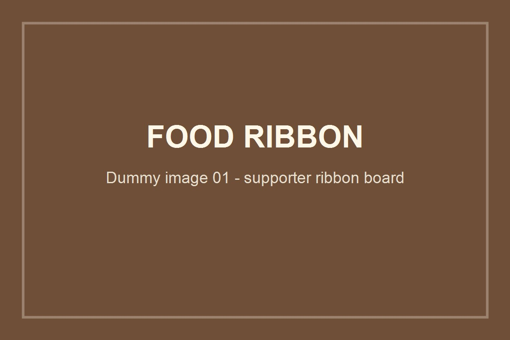
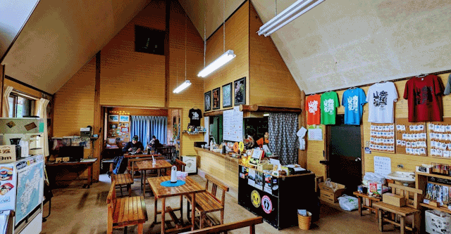
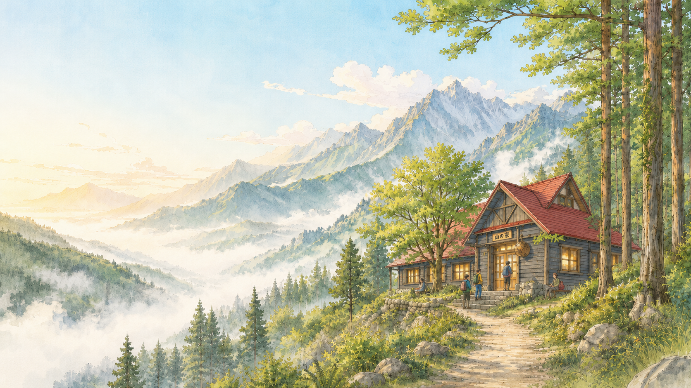

食
立ち寄れる理由をつくる
温かい食事があると、人は安心して山へ向かえます。奥槍戸山の家や平の里での食の活動は、山と人をつなぐ入口です。
阿波山雅の活動は、奥槍戸に来た人が安心して立ち寄れる場所、地域の人が誇れる仕事、子どもたちに渡せる記憶を、一つずつ守り育てるための活動です。
私たちがいちばん守りたいのは、「みんなが集まる場所」です。登山の前に一息つける場所。林道を走ってきた人が言葉を交わせる場所。地域の食や木や実りに触れて、ここを好きになってくれる場所。
場所が残ると、人が戻ってきます。人が戻ってくると、食べる人、手伝う人、伝える人、応援する人が生まれます。阿波山雅は、その小さな循環を絶やさないために活動しています。
活動は、正しさだけでは伝わりません。「ここがなくなったら寂しい」「この場所を誰かに教えたい」「自分にも少しできることがありそう」と思えることが、訪問や支援の入口になります。
だからこのページでは、活動の説明だけで終わらせず、実際に何をしているのか、どの記録を見ればよいのか、次にどう関われるのかまで並べます。
食べること、手を動かすこと、実りを仕事にすること。その全部が、山を次につなぐ力になります。
温かい食事があると、人は安心して山へ向かえます。奥槍戸山の家や平の里での食の活動は、山と人をつなぐ入口です。
木頭杉や木工、道の整備、ものづくりを通して、山に積み重なった知恵と技を、見て触れられる形にします。
ゆずや地域産品、季節の恵みを活かし、小さくても続く仕事と応援の形をつくります。
阿波山雅が特に力を注ぐ4つのプロジェクトです。それぞれに専用ページがあり、背景・現場・数字を詳しくまとめています。

2024年3月〜 継続中一枚のリボンが、子どもの一食になる。
山を訪れた人が購入したリボン（食券）で、木頭の子どもたちへ食事を届ける活動。平の里・奥槍戸山の家・木頭図書館前を拠点に続けています。
 日亜ふるさと振興財団 助成事業
日亜ふるさと振興財団 助成事業
山を訪れる人と、一緒に道を再生した。
豪雨で荒廃した次郎笈の登山道を、助成と地域連携で整備。登山者延べ45人と協働し、危険区間約400mを再生しました。

2026年3月21日 実施物語と謎解きで、木頭杉の歴史を体験する。
阿波山雅・WoodHead・木頭図書館の共同企画。子どもたちが「冒険の書」を手に、謎解きで木頭杉の歴史や職人の仕事に触れる体験イベントです。

2024・2025 2年連続参画林道を走る人が、山や地域と出会う入口をつくる。
年間推計15,400人が通る剣山スーパー林道。奥槍戸山の家が配布拠点・関連企画の会場となり、通過する人を地域の滞在・食・体験へつなぎます。
注力プロジェクト以外にも、奥槍戸山の家の運営や植樹、広報、地域産品づくりなど、山の暮らしと拠点を支える活動を続けています。
奥槍戸山の家は、登山者、林道利用者、家族連れ、地域の人が立ち寄る山の拠点です。食事、休憩、情報、会話があることで、山は「通り過ぎる場所」ではなく「また来たい場所」になります。
阿波山雅は、この場所を一時的なにぎわいで終わらせず、営業、案内、イベント、サポーターとの交流を重ねながら、山に人が戻ってくる入口として育てています。
はじめてでも大丈夫。山に来てくれた人が「来てよかった」って思えるように、まずは笑顔で迎えたいんよ。
ヤマザクラの植樹は、すぐに大きな成果が見える活動ではありません。苗を植え、根づくのを待ち、季節がめぐるのを見守る活動です。
今植えた木が何年か後に花を咲かせ、その景色を見に誰かが山へ来る。そんな未来を想像しながら、植樹や環境づくりに関わります。
山の仕事は、すぐに結果が出るものばかりではありません。だからこそ、みんなで関わった記憶を残すことが大切です。
活動は、伝わらなければ、知らない人にとっては存在しないのと同じです。阿波山雅は、広報誌「奥槍戸やま日和」やお知らせ、SNS、メディア掲載を通じて、山で起きていることを届けています。
言葉にして残すことで、活動は一日限りで終わらず、次の参加者、次の支援者、次の仲間へ届いていきます。
残すだけでは足りません。伝わる形にしましょう。山の魅力は、知っている人だけのものにしておくには惜しいです。
山の地域には、ゆずをはじめとした実りがあります。育てる人、収穫する人、加工する人、届ける人、買う人がつながって初めて、地域の力になります。
阿波山雅は、果樹や地域産品を、山へ来る理由、地域を知る入口、応援の形として育てていきます。
地域の実りは、ただの素材ではありません。山の気候、人の手、続けてきた暮らしが詰まった応援の入口です。
山に行くことも、食べることも、発信することも、寄付することも、手伝うことも、すべて活動の一部です。
奥槍戸山の家に立ち寄る。林道を安全に楽しむ。イベントに参加する。地域の食を味わう。来てくれる人がいること自体が、場所を続ける力になります。
個人サポーター、法人スポンサー、ボランティア、組合加盟など、関わり方はいくつもあります。大きな支援だけでなく、継続して見守ることも力になります。
食べに行く。木に触れる。活動を広げる。手伝う。応援する。関わり方はひとつではありません。あなたの一歩が、奥槍戸に人が集まる未来につながります。